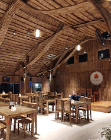
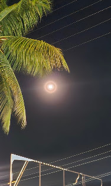

Moments of Timber, Craft & Embers
Explore the living bamboo cathedral, hand-forged sculptural installations, and soulful heritage culinary artistry along the Channapatna corridor. An architectural pilgrimage where ancient organic textures meet refined Southern hospitality.

The Soaring Apex Bamboo Facade
Hand-woven towering gable structure bending natural bamboo harvested along the Kaveri river basin. A modern cathedral honoring regional vernacular artisan traditions.

Golden Tree of Life Mural
Hand-forged brass installation rooted in temple relief crafts, casting hypnotic leaf shadows.

Claypot Dum Biryani Table Feast
Sealed with dough to preserve aromatic mountain spices and slow-cooked tender meat.
The Full Photographic Register
Every texture, harvest, and timber joist has been designed to transport travellers into a meditative sensory sanctuary. Click any image to view in full resolution.

High-Canopy Dining Hall
01Expansive view of wooden timber rafters and woven cane lanterns framing the open sanctuary.

The Kannada Identity
02Warm illuminated Kannada script celebrating regional literary roots framed by living monstera foliage.

Charred Tandoori Kebabs
03Served over rustic black stoneware with spiced onion ribbons and fresh mountain mint chutney.

The Divine Greeting
04Vibrant sculpted Kathakali relief set against raw vertical bamboo cane dividers.

Cathedral Rafters at Twilight
05Soaring ceiling height allowing natural cross-ventilation, glowing in the early evening light.

Spiced Golden Wings
06Signature coastal crunch tossed with curry leaves, cracked black pepper, and tangy dipping chutney.

Lush Bamboo Dining Pods
07Foliage-wrapped timber columns creating secluded micro-sanctuaries within the expansive hall.

Karnataka Spiced Pot Biryani
08Steaming seeraga samba rice topped with roasted spices, golden shallots, and boiled egg.

Clay Oven Handcrafted Naans
09Freshly slapped artisan flatbreads served warm in traditional brass wire bread baskets.

Deccan Palak Gravy
10Mountain spinach purée gently simmered in hand-beaten kadai with artisan paneer cubes.

Artisan Teak Enclave
11Intimate dining booth under the gentle amber glow of hand-cut metallic tree filigree.

Highway Pepper Curry
12Slow-simmered rich red chili and peppercorn gravy bursting with fiery coastal fragrance.

Individual Dum Handi
13Claypot Biryani presented hot at the table alongside chilled artisanal raita and fiery salan.

Crispy Cutlet & Pepper Toss
14Golden breaded cutlets pan-fried with Malabar cracked peppercorn and garden fresh sprigs.

Heirloom Tandoori Roti
15Traditional whole wheat flatbread served steaming with rustic slow-reduced spiced gravy.

Fragrant Jeera Basmati
16Pure desi ghee tempered cumin rice garnished with sweet ripe sliced tomatoes and fresh herbs.

Nocturnal Canopy & Moon
17The serene night sky framing swaying coconut palms above the illuminated bamboo sanctuary.
Experience The Sanctuary in Motion & Light
High-resolution photography captured on site at Bangalore-Mysore Highway, Channapatna. Guests are invited to capture and share their own moments beneath our towering bamboo arches and clay lantern pavilions.
Golden Hour at Kantara
Best photographed between 5:30 PM & 6:45 PM as natural twilight aligns with our warm wicker chandeliers.
Reserve Twilight TableDine Amidst Living Bamboo Architecture
Reserve your table or banquet enclave along the Bangalore–Mysore expressway.